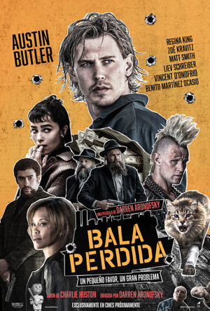
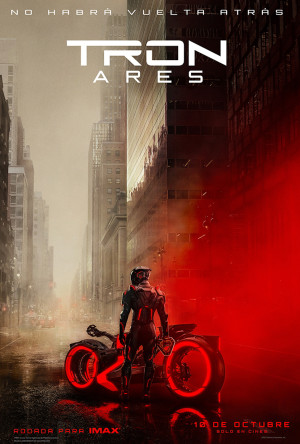

Estrenos
Bala Perdida
Fecha de estreno: 10 de octubre de 2025
Vieja Loca
Fecha de estreno: 10 de octubre de 2025
Tron: Ares
Fecha de estreno: 10 de octubre de 2025
Calendario de eventos
| Lun | Mar | Mié | Jue | Vie | Sáb | Dom |
|---|---|---|---|---|---|---|
| 1 | 2 | 3 | ||||
| 4 | 5 | 6 | Festival de Cine Europeo | 8 | 9 | 10 |
| 11 | 12 | 13 | 14 | 15 | 16 | 17 |
| 18 | 19 | 20 | ZINEBI (Cortometrajes y Documentales) | 22 | 23 | 24 |
| 25 | 26 | 27 | 28 | 29 | 30 |